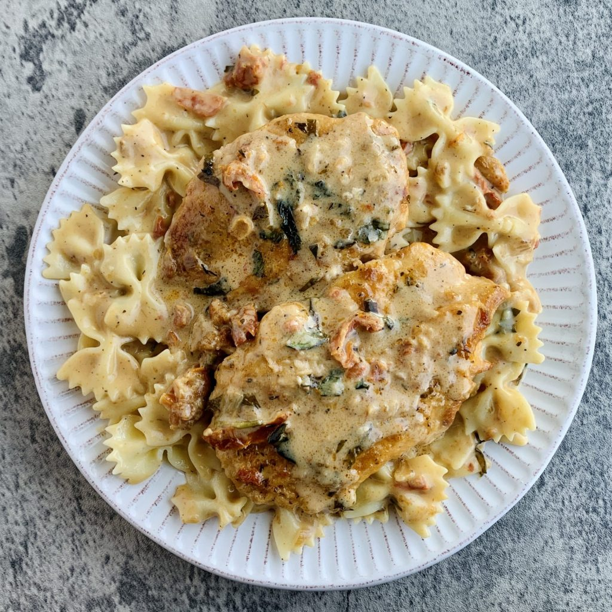

Marry Me Chicken
Head back to our Home Page

Win someone over with this creamy chicken casserole.
It's a great family meal served with mash,
or new potatoes, and green beans.
Here are the ingredients:
- 30g plain flour
- 4 sundried tomatoes
- 125g red onion
- 3 garlic cloves
- 1/1 - 1 tsp chili flakes
- 2-3 thyme or oregano sprigs
- 150ml double cream
- 250ml chicken stock
- 35g parmesan (grated)
- 8-10 basil leaves torn, to serve
- lemon wedges(to serve)
Method:
- Put the flour on a plate and season with salt and freshly ground black pepper. Coat the chicken in the flour.
- Heat 2 tbsp of the sundried tomato oil in a large, lidded frying pan over a medium heat
- Fry the chicken for 8-10 mins until golden all over, but not cooked through.
- Set the chicken aside on a plate.
- Drizzle the remaining 1 tbsp sundried tomato oil into the pan and reduce the heat to medium-low.
- Fry the onion for 8-10 mins until softened but not golden.
- Stir in the garlic and cook for another minute before adding the sundried tomatoes,
chilli and thyme or oregano, stirring well.
- Add the chicken back to the pan, then pour over the cream and chicken stock, and season well.
- Put the lid on the pan and cook on medium-low
for about 20 mins, turning the chicken halfway through until it is cooked through and the sauce has thickened a little.
- Stir in the parmesan, then serve with a scattering of basil leaves and lemon wedges on the side for squeezing over, if you like.